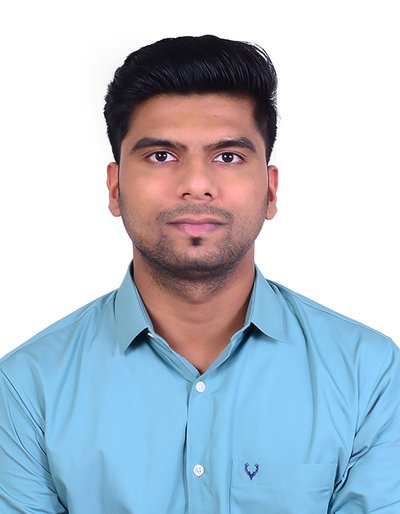

Aerospace Engineer — Flight Dynamics, Control Systems & CFD
MSc Aerospace Engineering, University of Leicester. I build models, then find out where they break before anyone else does. This page shows the actual working, not just the conclusions.
MSc Aerospace Engineering, University of Leicester · BEng (Hons) Aeronautical Engineering, 2:1 equivalent · 8 professional certifications (Ansys, COMSOL, CSWP, Azure) — full history on CV
Built a 7-state linear state-space model of F-16 longitudinal dynamics (altitude, pitch angle, forward velocity, angle of attack, pitch rate, plus two further stability states) in MATLAB/Simulink, with throttle and elevator as control inputs. Augmented with an integral altitude-error state (8 states total) and confirmed full controllability — rank 8 — before designing the controller.
Designed a full-state-feedback LQR controller with integral action, tuning the Q/R weighting matrices to trade tracking speed against control effort. Stress-tested the design against a +20% increase in the state matrix A rather than trusting the nominal case alone.
| Metric | Nominal | Robust (+20% A) |
|---|---|---|
| Steady-state error | 0.023 ft | 0.019 ft |
| Overshoot | 0.9% | 0% |
| Settling time (2%) | 5.74 s | 7.22 s |
| Rise time (10–90%) | 3.47 s | 3.49 s |
Both cases converge cleanly to the 100 ft reference — the controller holds up under a meaningfully perturbed system, not just the idealised nominal case.
Led the Kalman filter design and MATLAB simulation for the team, building a nonlinear coordinated-turn motion model to fuse LiDAR and RADAR measurements into a single state estimate. Implemented an EKF and a UKF under identical simulated trajectories and noise conditions and compared them directly rather than assuming which would perform better.
| Estimator | Position RMSE | Velocity RMSE | Peak Position Error |
|---|---|---|---|
| LiDAR only | 0.63 m | 0.58 m/s | 1.72 m |
| RADAR only | 0.78 m | 0.67 m/s | 2.06 m |
| Fused EKF | 0.49 m | 0.49 m/s | 1.31 m |
| Fused UKF | 0.41 m | 0.36 m/s | 1.08 m |
Fusion cut position RMSE 34.9% versus LiDAR-only and 47.4% versus RADAR-only tracking. The UKF's higher per-update cost (0.58 ms vs. 0.31 ms for the EKF) stayed well inside the 50 ms sampling budget, so the accuracy gain came at negligible real-time cost.
Built a 3D Moving Reference Frame (MRF) CFD model in ANSYS Fluent to estimate propeller thrust, explicitly resolving rotating-zone boundaries and blade geometry rather than using a simplified actuator-disk approximation. Ran a mesh-independence study before trusting the result.
| Mesh | Cells | Thrust @ 6,800 rpm, 16 m/s | Change |
|---|---|---|---|
| Coarse | 1.18M | 18.19 N | — |
| Medium | 2.36M | 18.36 N | 0.94% |
| Fine | 4.72M | 18.69 N | 1.8% vs. medium |
At the design point (6,800 rpm, 16 m/s), the model predicted 18.69 N thrust and 0.79 N·m torque. Compared three propulsion configurations and selected the 3-blade/305 mm design for a thrust-to-drag ratio of 1.42, versus 1.32 and 1.28 for the alternatives.
Designed a three-arm tricopter airframe in CATIA around an integrated metal-detection payload, iterating arm geometry, central-body layout, and reinforcement across four design revisions. Sized the structure against five load cases: hover, 2.5g manoeuvre, asymmetric thrust, landing, and payload offset.
| Iteration | Structural Mass | CG Offset | Critical Stress |
|---|---|---|---|
| I | 0.51 kg | 15.8 mm | 84.7 MPa |
| II | 0.48 kg | 11.4 mm | 74.9 MPa |
| III (final) | 0.46 kg | 8.6 mm | 68.4 MPa |
| IV (rejected) | 0.44 kg | 8.1 mm | 79.2 MPa |
Iteration IV was lighter but rejected — the stress margin dropped too far for the weight saved. The landing case governed the final design at 72.1 MPa peak stress with a minimum factor of safety of 2.07. Final mass: 1.84 kg (2.0 kg limit), 128 mm ground clearance, CG held within 8.6 mm of centre.